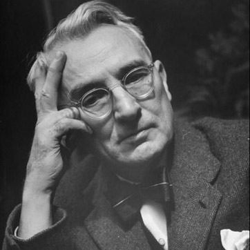

|  |
Дейл КарнегиХронология:
|
Дейл Брекенридж Карнеги — американский писатель, публицист, педагог-психолог, преподаватель. Стоял у истоков создания теории общения, переведя научные разработки психологов того времени в практическую область, разработав собственную концепцию бесконфликтного и успешного общения.
Карнеги родился 24 ноября 1888 года на ферме Меривилль в Миссури. Родился в семье фермера в американской глубинке. И хотя его семья жила в большой бедности, тем не менее он за счет собственной настойчивости смог получить неплохое образование. Ораторским искусством заинтересовался еще в школьные годы, активно участвуя во всевозможных диспутах, причем уже тогда учителя отмечали его особенную коммуникабельность.
Те, кто прочитал хотя бы одну книгу Дейла Карнеги, не могут остаться равнодушными к выведенным им умозаключениям. Разработчик теории общения, self made man, педагог и превосходный оратор мотивировал если не на свершение революций, то, во всяком случае, на изменение отношения к себе и окружающим.
Впоследствии популярный оратор будет проводить первые бизнес-тренинги на сцене Carnegie Hall. Родители Аманда Элизабет и Джеймс Вильям держали ферму, но дохода хозяйство не приносило, на всем приходилось экономить, даже одежду Дейл донашивал за старшим братом. В школьные годы друзей у Карнеги не было, он сильно комплексовал из-за бедственного положения семьи, да и для неформального общения попросту не хватало времени – работу на ферме никто не отменял. Раскрыться потаенным талантам помог дискуссионный кружок, куда Дейл записался, чтобы совсем не замкнуться в одиночестве. Тут-то и выяснилось, что парнишка, несомненно, красноречив и выразителен.
К 1926 году Карнеги набрался такого опыта в общении, что впечатлений и выводов хватило на первую серьезную книгу – «Ораторское искусство и оказание влияния на деловых партнеров». Более того, тонкости собственной системы обучения позволили Дейлу запатентовать ее и тем самым получить источник постоянного дохода. Последующие десять лет привели педагога к пониманию того, что людям мало уметь красиво говорить, им хочется менять мировоззрение окружающих и влиять на принятие решений. Плодом размышлений стала книга «Как завоевывать друзей и оказывать влияние на людей», ставшая самым популярным произведениемКарнеги.
Издание разошлось миллионными тиражами, а сумма гонорара по нынешнему курсу сделала автора миллиардером. Принято считать, что первое впечатление и есть самое верное. На страницах книги Дейл советовал, что необходимо предпринять, чтобы оно стало хорошим и в дальнейшем сказалось на том, какие выводы будут сделаны по отношению к вам. Бестселлер пользовался популярностью еще и потому, что Карнеги приводил всем знакомые примеры из жизни, давал четкие практические рекомендации: улыбайтесь, не критикуйте, проявляйте заинтересованность.